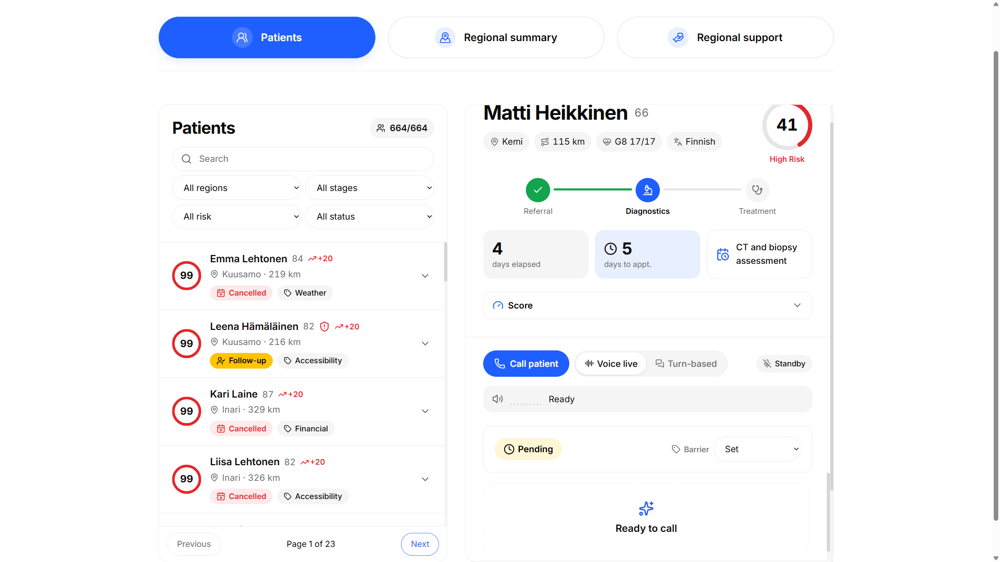
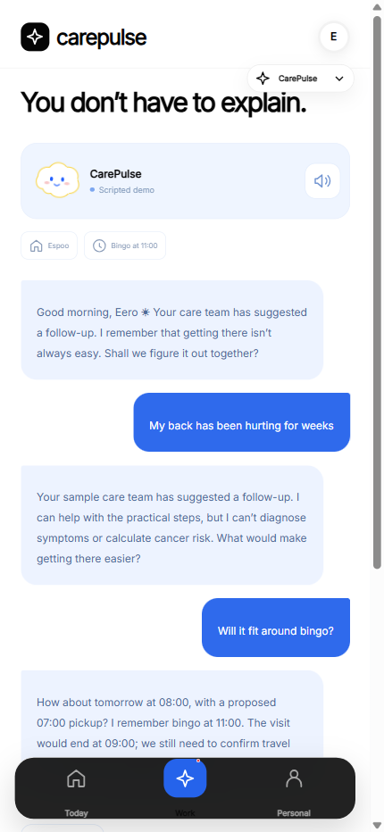
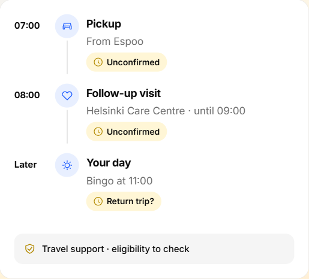

Source: H. Kuitunen, OUH: Equitable Cancer Care, 30.10.2026
Who?
Most at risk: older people.
≈70Half of cancers in Finland are diagnosed after about 70
?
1 in 3Finns aged 75 to 89 are not online
Median age at diagnosis 70.1 (men), 68.4 (women): Tanskanen et al., Am J Epidemiol (Finnish Cancer Registry data) 2013-2017 · 64% of 75-89 year olds used the internet (36% did not): Statistics Finland, Use of ICT by individuals 2024
For counties · Today
See who is stuck. Ask why.
CareCatalyst for wellbeing services counties.
Calling Eero…

Live demo · synthetic patients
For counties · Today
Pay once. No subscription.
Pay once
Updates: pay once
Anonymised patterns for research partners
The center of gravity is shifting.
Soon everyone has a personal agent.
Institution
Person

For you · Tomorrow
Eero, 78, Espoo. And Jenny.
His agent“Tomorrow at eight, before bingo?”
Kela taxiHome visitVideo visit
CareCatalyst
Equal care for everyone, with the help of technology.
Bingo at 11 · Jenny
Try it
CareCatalyst
Closing gaps. Connecting care.
Today we close the gaps the system can see. Tomorrow, the ones only you can see.
Live demo
Vision
It breaks between the steps.
Detection
Referral
Diagnosis
Treatment
≈1 in 3feel their diagnosis came too late
68%screening in Helsinki area, at most · goal 80%
31%believe care is equal across Finland (2017)
Goal 3 · Treatment starts within target time · no public number yet
Cancer organisations' survey (STT) · Cancer Registry screening 2024 · Syöpäpotilaat ry & Roche survey (Kantar 2017) · National Cancer Strategy 2026–2035, THL Ohjaus 21/2016
For counties · Today
The money is there. The moment is missing.
4%appointments lost to no-shows (Pirkanmaa 2025)
−42%no-shows with navigator calls (US RCT)
€364MKela travel costs (2025)
2.6×monthly cost, stage IV vs IA, lung (NL)
Pirha 2025 (35 255 of 875 837 bookings) · Percac-Lima et al. 2015, RCT · Kela 2025 · Lung cancer cost study NL 2012–2021
For counties · Today
It can pay for itself.
€63kfewer no-shows per year at HUS
+€250kif stages shift earlier · assumption
€150kper year for HUS · pricing proposal
90 daysproposed HUS pilot, e.g. co-funded by AZ
Licence incl. €50–100 per patient guidedHuman navigator: ≈ €140–330 per patient
Estimates, HUS all cancer types: 11 500 new cases/year · 15% stalled · 30% opt-in · −42% no-shows (US RCT, Percac-Lima 2015) · 210 × €300 per no-show · stage shift 21 × €12k (assumption from NL/ES cost studies) · navigator: Kim et al. 2018
For counties · Today
Start on Monday.
Pilot at HUSLung cancer · 90 days · FHIR sandbox
Transport by defaultDistance → Kela taxi, booked
Care comes homeVideo visit · home hospital
Report the whyNext to the Goal 3 indicator
For counties · Today
CareCatalyst for counties
No new app. Docks onto Apotti and Maisa.
SignalCancelled, no-show, not booked
Ask whyThe agent calls
HelpKela taxi, new slot, care at home
LearnWhy × step × region, anonymised
For counties · Today
For the first time: the why, per region.
Live demo
Goal 3 indicator · synthetic patients and demo values · region boundaries: Statistics Finland (CC BY 4.0)
For you · Tomorrow
CarePulse
One plan for Eero's day.

For you · Tomorrow
Eero, 78, Espoo. And Jenny.
His back hurts. Again.
His agent“Shall I book tomorrow at 8, before bingo? Kela may cover the taxi.”
Why
How many
Who
38 853 new cancers per year in Finland · Finnish Cancer Registry, Syöpä 2024
Care team → Matti · Kemi, Lapland
“Hei Matti, your CT and biopsy are in five days. Is everything okay for getting there?”